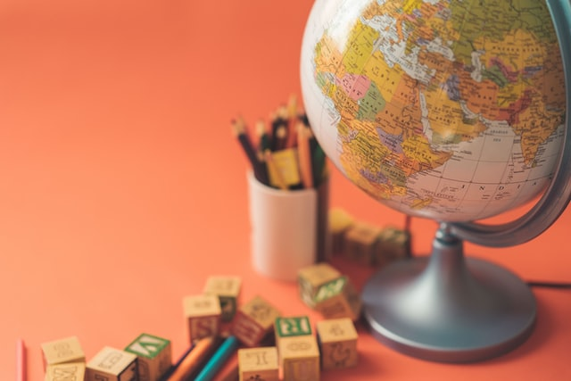

최근 국내외 교육과정은 역량을 중심으로 미래 사회에 부응하는 방향으로 나아가고 있다. 미래 사회는 지식이 많은 사람보다는 지식을 잘 활용할 수 있는 사람을 필요로 한다. 또한 자연과 생명을 존중하며 다른 사람과 함께 살아가는 바른 인성을 갖추고, 창조적 사고로 지속 가능한 사회를 만들어 갈 수 있는 역량을 갖춘 사람이 필요하다. 이러한 역량을 반영하여 개정된 '2015 개정 초중등학교 교육과정'은 학습자의 경험을 강조하며, 학습경험의 질 개선을 위하여 '배움을 즐기는 행복 교육'을 추구하고 있다. '2019개정 누리과정'
에서는 새로운 시대의 요구에 따라, 교육내용을 간략화하고 유아가 주도하는 놀이를 통해 배움이 구현될 수 있도록 유아-놀이 중심 교육과정으로 나아가고자 하였다.

'3-5세 연령별 누리과정'은 유치원 교육과정과 3~5세 보육과정을 통합한 공통과정으로서 유치원과 어린이집 유아들이 공통의 교육내용을 경험할 수 있도록 하는 성과를 이루었다. 그러나 '3-5세 연령별 누리과정'은 연령별 교육내용이 과다하다는 문제가 있었다. 이에 '2019 개정 누리과정'에서는 새로운 시대의 요구에 따라, 교육내용을 간략화하고 유아가 주도하는 놀이를 통해 배움이 구현될 수 있도록 유아-놀이 중심 교육과정으로 나아가고자 하였다.